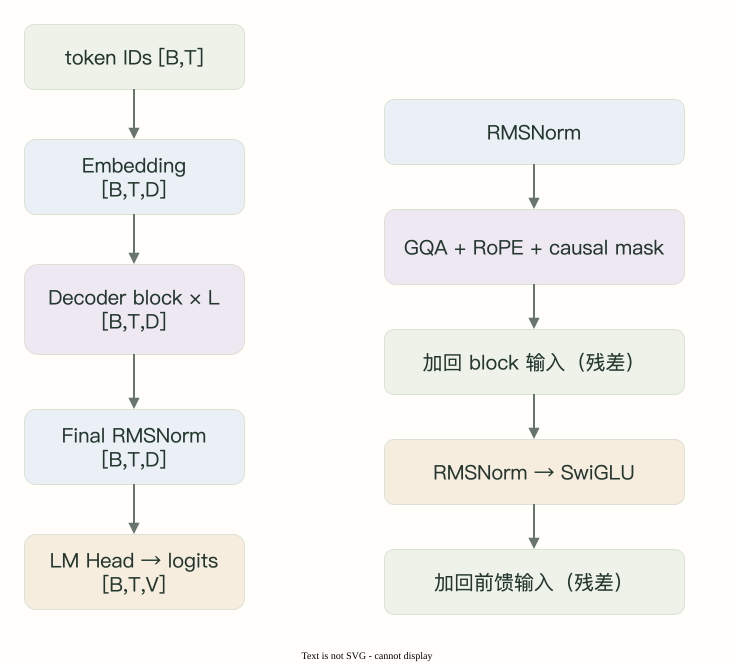

课程目录/ 基础知识 / 模型架构
Transformer LM
把 tokenizer 的输出接进模型，
看清每个模块在整条链路中的位置。
本页目录
图解 · Transformer LM 全景

本课要点与先修
沿输入→隐藏表示→输出分数的路径理解模型，再分别学习 Attention 与位置编码。
先看输入与输出的契约
输入IDs为[B,T]，查表得[B,T,D]，经过decoder blocks后，由LM Head输出[B,T,V]。B为批量、T为序列长度、D为隐藏维度、V为词表大小。
Tokenizer词表必须与模型索引约定匹配。
两篇正式课目，各解决什么？
| 课目 | 读完能做到什么 |
|---|---|
| 从 token ids 到 logits | 追踪完整前向路径，解释 pre-norm、残差、训练标签移位与生成分岔。 |
| Embedding 与 LM Head | 手算输入查表与输出点积，理解权重共享、参数量和两路梯度。 |
哪些细节在后面展开？
主干课先确定 Attention、RoPE、RMSNorm 与 SwiGLU 的位置，后续专题再展开计算细节。
配套实验与质量边界
配套两层CPU TinyLM使用V=32、D=16、4个查询头、2个KV头，验证形状、因果性与梯度；模型为随机初始化。
参考
本页为系列导读，不计入十二节正文。